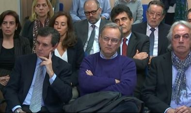

¿Sabrá la Infanta cómo llegó al banquillo del caso Nóos y por qué seguirá en él hasta el final del juicio oral? Seguro que le sonarán los nombres de Emilio Botín, el extinto presidente del Banco Santander, y de Juan María Atutxa, expresidente del Parlamento vasco. Pero el conocimiento superficial no agota el asunto. Las magistradas Eleonora Moya, Samantha Romero, presidenta y ponente, y Rocío Martín (de izquierda a derecha, en la imagen), que forman el tribunal del caso Nóos en la Audiencia de Palma, han resuelto que debe seguir en el banquillo por ser presunta cooperadora necesaria en dos delitos fiscales tras interpretar las sentencias de ambos casos y concluir que los delitos fiscales entran dentro de la lógica de la doctrina Atutxa.
Esto es: que la acusación popular puede llevar a la infanta Cristina al banquillo en solitario aunque el Ministerio Fiscal y el Abogado del Estado, que en el caso Nóos representa a Hacienda, no presenten acusación contra ella. Pero son los hechos que hay detrás de los nombres los que merece la pena reconstruir. He aquí, pues, la historia.
En noviembre de 2006, el presidente del Banco Santander es juzgado por delitos fiscales (comercialización del producto financiero llamado cesiones de crédito). La Fiscalía y el Abogado del Estado no le acusan. Sólo lo hace, tardíamente, una acusación popular. El tribunal de la Audiencia Nacional que preside el magistrado Javier Gómez Bermúdez aborda al empezar el juicio oral las cuestiones previas. La defensa del banquero y otros ejecutivos pide el sobreseimiento. El tribunal acepta la petición y archiva la causa. El juicio no se celebra.
¿Por qué? El tribunal interpreta literalmente el artículo 782.1 de la ley de Enjuiciamento Criminal. Si la Fiscalía y el Abogado del Estado piden el sobreseimiento el juez instructor, en este caso la magistrada Teresa Palacios, debía concederlo. El acusado, pues, no puede ser llevado a juicio. La acusación popular recurre. El 3 de diciembre de 2007, un pleno jurisdiccional de la sala segunda de lo Penal del Tribunal Supremo, convocado a raíz de la división de opiniones, vota a favor de confirmar la absolución de Botín. El ponente, Julian Sánchez Melgar, partidario de condenarle, deja la ponencia. La asume el magistrado Enrique Bacigalupo.
Conclusión: la acusación popular en solitario no basta para sentar en el banquillo a un acusado. Es lo que dice literalmente la ley. "Si el Ministerio Fiscal y el acusador particular solicitaren el sobreseimiento de la causa...lo acordara el juez", se lee en la ley citada. La mención a la acusación popular brilla por su ausencia. Forman mayoría, con matices, 8 magistrados, contra 6.
El precedente dura poco. La sala segunda de lo Penal del Supremo tiene que resolver, en paralelo al caso Botín, un recurso contra la sentencia absolutoria del expresidente del Parlamento vasco, Juan María Atutxa, acusado de un delito de desobediencia, dictada por el Tribunal Superior de Justicia del País Vasco (TSJPV). En este caso, el Ministerio Fiscal no había acusado a Atutxa; sí lo hace la acusación popular de Manos Limpias. Ante la división de criterios, el 17 de diciembre de 2007 se resuelve convocar para el 21 de enero de 2008 un pleno jurisdiccional sobre el recurso de casación presentado por la acusación popular de Manos Limpias contra la sentencia. La defensa de Atutxa pide que se aplique la doctrina Botín y se confirme la absolución. La Fiscalía respalda a Atutxa. El ponente, Carlos Granados, que ha apoyado dicha doctrina, es coherente: propone al tribunal su aplicación.